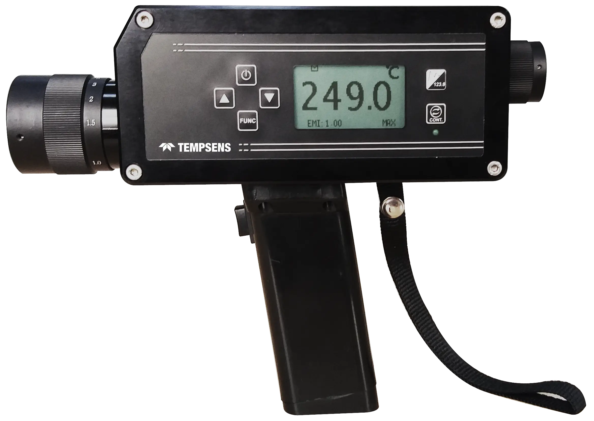

Handheld non-contact measurement up to 3,000°C. Through-lens optical sighting, rechargeable battery, 40,000-reading data log. Two series for two different demands.

Four questions decide the model: the temperature ceiling you need, whether emissivity will vary, whether measurement through glass or steam is required, and how much data you need to carry back.
| If you need… | TI 1500 | TI 1800 | P250 | P450 | P250C | P450C | P390 |
|---|---|---|---|---|---|---|---|
| Above 2,500°C | — | — | — | to 3,000°C | — | — | — |
| Two-colour ratio (variable emissivity) | — | — | — | — | ✓ |
✓ |
— |
| Through glass or steam | — | ✓ |
✓ |
✓ |
✓ |
✓ |
— |
| Combustion gas measurement (3.9 µm) | — | — | — | — | — | — | only model |
| 40,000 readings + USB | — | — | ✓ |
✓ |
✓ |
✓ |
✓ |
| Bluetooth wireless output | — | only model | — | — | — | — | — |
| Fastest response (5 ms) | — | — | 5 ms | — | — | — | — |
Tell us the maximum temperature, whether emissivity varies in your process, and whether you're measuring through any medium. We'll confirm the right model — or tell you if two-colour applies to your application.
Full specification table, technical notes on two-colour measurement and through-lens sighting, and FAQs. For engineers who want the complete picture before ordering.
| Spec | TI 1500 | TI 1800 | P250 | P450 | P250C | P450C | P390 |
|---|---|---|---|---|---|---|---|
| Temperature range | 0–1,500°C | 250–1,800°C | 210–2,500°C | 600–3,000°C | 450–1,400°C | 600–2,500°C | 400–1,400°C |
| Spectral range | 8–14 µm | 1.1–1.6 µm | 1.6 µm | 1.0 µm | 1.5/1.6 µm | 0.7–1.15 µm | 3.9 µm |
| Emissivity | 0.1–1.2 | 0.1–1.0 | 0.1–1.0 adj. | 0.1–1.0 adj. | Slope 0.75–1.25 | Slope 0.75–1.25 | 0.1–1.0 adj. |
| Optical resolution | 50:1 | 100:1 | 100–400:1 | 400:1 | 200:1 | 200–400:1 | 200:1 |
| Response time | 200 ms | 200 ms | 5 ms | 25 ms | 25 ms | 25 ms | 50 ms |
| Accuracy | ±1% / 3% FS | ±0.5% / 3% FS | ±0.3% / 1°C | ±0.5% / 1°C | ±0.5% / 1°C | ±0.5% / 1°C | ±1.0% +1°C |
| Data storage | None | 1,000 | 40,000 | 40,000 | 40,000 | 40,000 | — |
| Connectivity | None | Bluetooth | USB 2.0 | USB 2.0 | USB 2.0 | USB 2.0 | USB 2.0 |
| Through glass/steam | No | Yes | Yes | Yes | Yes | Yes | No |
| IP rating | IP20 | IP20 | IP52 | IP52 | IP52 | IP52 | IP52 |
Standard pyrometers measure radiation at one wavelength and assume a set emissivity. If emissivity is wrong — because of scale, variable surface condition, or partial steam between you and the target — the reading is wrong. A two-colour (ratio) pyrometer measures at two adjacent wavelengths and divides them. Because both wavelengths are affected proportionally by emissivity variation or partial obscuration, the ratio cancels the error.
If emissivity is stable and the sightline is clear, a standard P-Series gives better resolution. Two-colour is for variable or unknown emissivity — not every situation.
Through-lens (TTL) sighting means you look through the same optical path the pyrometer uses to measure. The crosshair is exactly on the measurement spot. This matters when targeting small objects at distance, tracking moving targets, or working in conditions where misalignment by even a few degrees changes what you're measuring. TI series uses a reflex or electronic viewfinder — adequate for large targets at close range. For small targets, long distances, or moving objects, TTL sighting in the P Series gives you the certainty that the reading is on the right spot. The P Series also includes dioptry correction (−2.5 to +2.5) so operators with different vision can use the instrument without glasses.